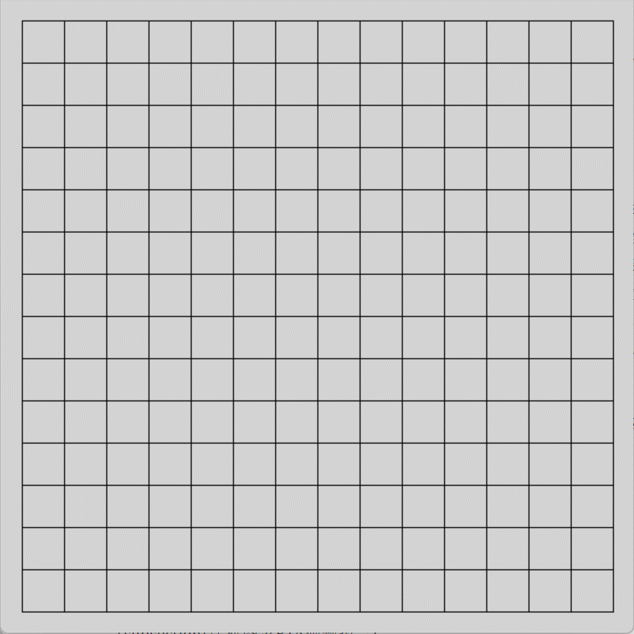

个人简历
基本信息
专业技能
- 多年的算法竞赛经验带来的良好的编程能力。工程代码具有良好的可维护性、可读性和健壮性。
- 熟练使用
C/C++，有Python、Java、Pascal、LaTeX、matlab、Qt 的使用经验。
- 良好的英语阅读和交流能力（四级590，六级477）
- 基本的机器学习能力：可徒手实现模拟退火算法、蚁群算法。了解决策树、回归分析、聚类算法、神经网络的基本原理，可调用对应的库解决问题。
- 部分课程成绩如下：高级程序设计语言99分；数据结构与算法分析95分；大学英语视听说90分；数学分析87分；
- 熟悉基础数学数论，阅读《信息安全数学基础》《应用密码学》，了解
RSA，DES等加密算法、MD5、SHA信息摘要算法。对信息安全领域有初步了解。
奖励荣誉
国家级
省级
- 中国计算机学会全国青少年信息学奥林匹克联赛一等奖；
校级
项目经验
基于博弈算法的五子棋人机对弈
- 介绍：该程序以深度优先搜索为基础。该过程融合了 min-max 博弈原理的思想，进行了迭代加深，优化了搜索顺，并且进行了α-β剪枝。同时，使用了 zobrist 哈希算法完成了状态的判断，进一步降低了搜索树的规模，达成“非必要不搜索”的目标。为增加程序的智能性，又利用字典树等数据结构录入了开局棋谱。在决策时，程序会检索当前局面哈希值，如果能够获得对策，就可以降低搜索树规模、进行灵活决策、快速获得结果。对局面进行评估，引入了动态修改的思想。本项目吸收了现代化的编程思想和成熟的算法思路。例如面向对象的程序设计、多文件编程、动态内存分配等。同时，设计了一种基于自然语言的高质量随机数的生成方法，该方法操作简单、性能良好，可以进行推广。
- 工作：完成了核心算法设计。包括博弈、迭代加深、搜索、剪枝、zobrist哈希、字典树、棋谱录入、动态估值、随机数生成等。

佐证：项目开源于https://github.com/Bj2002/Gobang
计科图灵PTA刷题报告
- 介绍：爬取了计科图灵在PTA的刷题数据，进行了分析处理，并产生了报告。该报告包含得分平均值、中位值、最大值、中位值等基本参数，还对用户提交时段、提交行为进行了关联性的分析，初步得出了一些结论。为使报告直观，进行了数据可视化。代码开源于github。
- 工作:使用Python进行了数据的收集和分析，并且进行了绘图。
- 佐证：可在https://bj2002.github.io/PTA_report.html查看。
个人网站
- 介绍：基于基础html语法知识和github pages服务完成了个人网站的建设。
数据结构课笔记
- 介绍：基于多年算法竞赛经验，结合课堂内容完成的数据结构课笔记，并分享给同学，实现资源共享，共同提高。
对未来学业的规划
短期目标
中期目标
- 能够进一步实践机器学习算法，进行初步的研究，能够在有一定影响力的期刊上发表文章。
长期目标